Aftereffects
are
visual
illusions
occurring
when
the
sensory
system
is
put
into
a particular
operation regime driven by the environment (e.g. after prolonged
exposure to specific moving patterns). When this enviroment changes
(e.g. when the motion stops) new stimuli (e.g. the static patterns) are
perceived in unusual way (e.g. illusory motion in reverse direction).
Movies below, generated with this
Matlab code, show new
renderings of
classical motion,
color
and texture after-effects.
The
code allows you to modify the parameters of the examples (speed,
spatial frequency, contrast, luminance and tristimulus values...).
ATTENTION:in the
animated examples
look at the fixation point (a cross in the center) and keep looking at
the cross after the change in the scene. The change will happen about
10 to 15 secs after starting the animation so that your visual system
adapts.Despite the
code
allows an accurate stimuli control, and these illustrations are good to
point out the general trends of the effects, they are not meant
to be
accurate
psychophysics: different
factors such
as monocular fixation,
spatial size
of the images (or observation
distance), context
(e.g. full screen versus
embedded reproduction), calibration
(your display is not calibrated according to the parameters used in the
generation), and even fixating
at
a
different
point, may help or impair the strength of the
effects.
Examples of STATIC MOTION AFTEREFFECT:
illusory
motion
of
static
patterns
in
reverse
direction
after
adaptation
Example
1:
vertical
motion,
noise
sequence
Adapting
Environment
Test
(Static
Pattern)
Animated
version
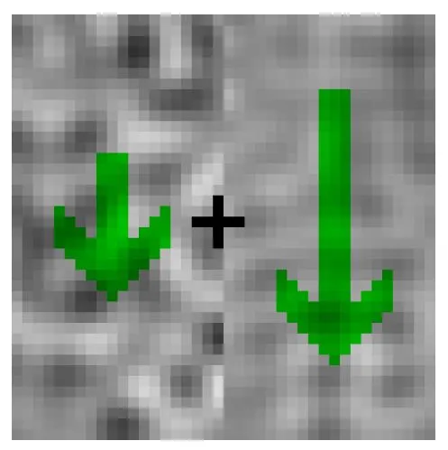
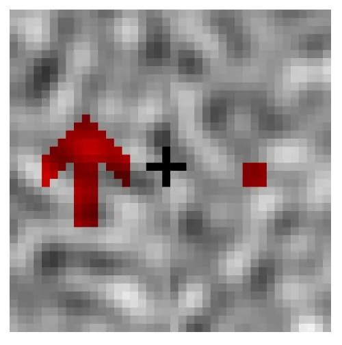
Example
2:
horizontal
motion,
noise
sequence
Adapting
Environment
Test
(Static
Pattern)
Animated
version
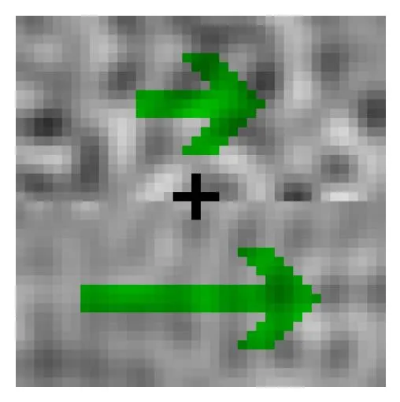
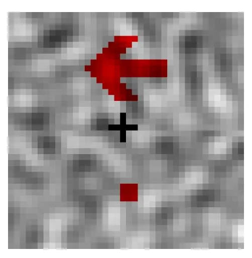
Example
3:
horizontal
motion,
natural
texture
Adapting
Environment
Test
(Static
Pattern)
Animated
version
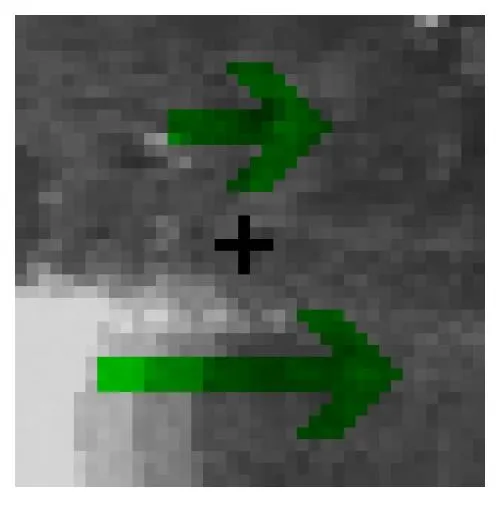
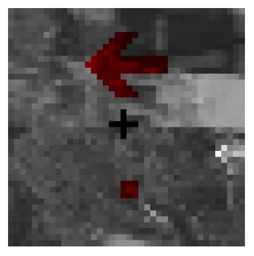
OBSERVATIONS
from
the
MOTION
EXAMPLES
Example 1 (vertical motion, noise sequence) shows that
the slow
moving pattern generates a stronger reverse motion aftereffect.
The aftereffect comes from the fact that the sensors tuned to zero and
slow positive motion are attenuated by the adapting sequence.
Therefore, a static pattern presented afterwards (that stimulates slow
negative, zero and slow positive sensors) elicits a smaller-than-usual
response in zero and slow positive sensors. As a result, the stimulus
is seen as moving with slow negative motion. Attenuation in sensors
tuned to zero motion comes from the fact that
activity in certain sensors reduces the gain of other sensors [Morgan
et al. 06, Stocker and Simoncelli 09].
The
stronger aftereffect produced by the slow motion pattern reveals that
sensors tuned to slow motion attenuate more strongly the sensors tuned
to static patterns. The activity of sensors tuned to higher speeds does
not affect zero motion sensors as much leading to weaker aftereffect. The
question is:
where this neighborhood interaction comes from?. Why
slow motion sensors attenuate the zero motion sensor more than the
sensors tuned to high speed?
Examples
2
and
3
(noise
and
natural
textures
with
horizontal
motion) illustrate
the
generality of the effect: it happens in any direction, and it is kind
of independent of the texture. The sequence with natural texture was
generated from a luminance
calibrated image database
used to train our
statistical
learning technique.
OBSERVATIONS
from
the
COLOR
EXAMPLES
Example 1 shows
that while
the
central part of the test image is achromatic (and not limited by any
contour), color and contours of the scene
change after adaptation: an illusory cyan/blueish patch emerges around
the fixation point.
This aftereffect arises because adaptation to a yellowish color leads
to shifts in the nonlinear responses of the Red-Green and Yellow-Blue
sensors [Krauskopf and Gegenfurtner 92, Fairchild 05]. After this
adaptation, stimuli that would be considered to be white in usual
conditions (with
unshifted curves) is perceived as greenish-blue. Equivalent shifts (but
in different chromatic directions) happen after adaptation to different
colors. The
question is:
why the nonlinearities shift in this specific way?
2.2
Different
frequency
but
different
otrientation
2.3
Different
frequency
and
orientation
Adapting
Environment
Test
(stationary
contrast)
Animated
version
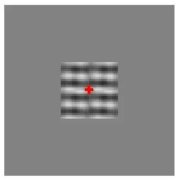
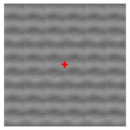
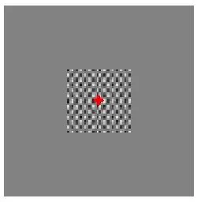
OBSERVATIONS
from
the
TEXTURE
EXAMPLES
Example
1 shows
that while
the
physical
contrast
of
the
test
image
is
stationary
(the
same
in
center
and
periphery),
it changes
differently after adaptation to the high contrast texture. Note that
the strength of the induced blindness around the fixation point depends
on the correspondence between frequency and orientation of the previous
and post scenes: if the frequency content is very similar the affected
zone virtually disappears. That is not the case in other situations.
This aftereffect arises because sensors tuned to certain frequency are
attenuated by the activity of sensors tuned to similar frequencies [Blakemore
69, Barlow
90, Watson 97]. As a result, after the presentation of a high contrast
pattern, if a similar pattern is presented, the response of the sensors
tuned to this second pattern is weaker than usual (under no
adaptation). Therefore, this second pattern is seen as having less
contrast, or eventually, not seen at all. The
stronger aftereffect produced between patterns of similar frequency
reveals that
sensors tuned to closer frequencies interact (attenuate each other)
more than sensors tuned to distant frequencies. The
question (as in the motion case) is:
where this local neighborhood interaction comes from?.
Example
2 shows that
the same
trends happen for the linear Principal Components of natural images:
even though they are statistically decorrelated, they are not
perceptually independent. Some additional processing is necessary to
make them perceptually independent.
Why
do we have these
illusions?: Better use normative models based on
unsupervised nonparametric learning!
A
description
of
the
phenomena
is
possible
by
modeling
the
empirical
nonlinear
responses in the mechanisms tuned to motion [Morgan 06], texture
[Watson
97],
and
color
[Abrams
07]. For example, this
Matlab code
reproduces how divisive normalization [Simoncelli and Heeger 98,
Carandini and Heeger 12] leads to mutual attenuation of motion sensors
tuned to neighbor frequencies, and hence to misperceptions of motion of
static objects after adaptation to moving patterns (see section 1.2 of
the paper).
Nevertheless this
empirical description does not explain why
the brain works in this
apparently dysfunctional manner. That is the classical limitation of descriptive models versus normative models (what versus why) [Dayan05].
Following
the
seminal
suggestions
in
[Barlow90]
about
explanations
based
on
information
maximization (a truly normative explanation),
multidimensional equalization has been proposed as a
convenient way to address adaptation and aftereffects
[Clifford00,Clifford02]. Unfortunately they did not propose
unsupervised techniques, but assumed specific parametric mechanisms
based on centering and scaling (a sort of divisive normalization).
Rather than
using specific functional forms for the adaptation, in
this work we derive the behavior from a recently proposed
unsupervised non-parametric learning technique: The Sequential
Principal Curves Analysis (SPCA) [Laparra et al. 12]. SPCA effectively
performs the multidimensional equalization previously
suggested, but not implemented, in the statistically inspired
literature addressing aftereffects [Clifford00, Clifford02]. We
argue
that
unsupervised learning is the appropriate way to focus on
the principle behind the aftereffects:
as
we
assume
no
parametric
form,
it
is
more clear that the behavior emerges from the specific optimization
strategies and not from an a priori
response model. Moreover, unlike other unsupervised learning
techniques, SPCA is more suited to answer the goal question because
it can be easily tuned to different principles such as
information maximization (as non-linear ICA) and also error
minimization in
limited resolution scenarios (as in optimal Vector
Quantization). See Section 4 in
the Paper
to see the equalization capabilities of SPCA on visual
textures. The illustrations below show how equalization leads to
attenuations and shifts in the responses that induce the aftereffects.
Predictions
using
Sequential
Principal
Curves
Analysis
SPCA
identifies relevant directions (curves) is datasets. SPCA is a
generalization of Principal Component Analysis (PCA) by allowing the
straight lines of PCA to be changed by non-Euclidean curves. As the
principal directions in PCA, the principal curves in SPCA can be
interpreted as sensors. Given a stimulus, the responses of SPCA sensors
are given by the projection of the stimulus onto the curves. The full
description on how these curves and projections is computed can be
found in this Technical Report.
Given the fact that length along the principal curves is measured using
a PDF dependent non-Euclidean metric, this kind of projection performs
a nonlinear multidimensional equalization.
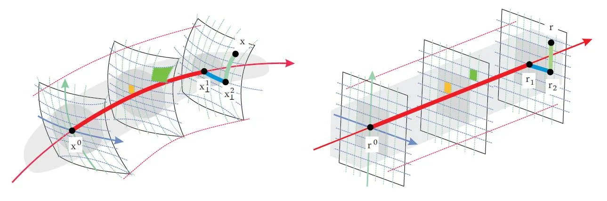
Identification of curvilinear coordinates and multidimensional histogram equalization using SPCA. Left
panel represents the data and coordinates at the input domain, and the
right panel represents the data and coordinates at the SPCA transformed
domain. Gray regions represent the underlying data distribution or PDF,
and the lines in bold style represent the projections of the
highlighted sample x onto
the first, second, and third Principal Curves. Using SPCA with
information maximization criterion this implies histogram
uniformization (see section 4 of the Paper for more details and the
Technical Report for full details). This means transforming the
nonuniform curvilinear coordinates into a cartesian grid.
Equalization
of the PDF corresponding to the natural stimuli leads to expansions and
contractions of the input domain in the response domain. This means
uneven sensitivity of the SPCA sensors in different regions of the input space. Aftereffects come from changes in the operation
regime of a sensor in different environments. The pictures below
illustrate how different spatial texture in the background or different
spectral illumination change the shape of the PDF and (assuming the
equalization goal) change the operation regime.
ADAPTATION OF TEXTURE SENSORS I:Different
directions in the image space represent the presence of certain
elementary patterns of bigger and bigger amplitude (or contrast).
Bigger and bigger stimulation of a linear sensor tuned to certain
pattern implies moving along a certain line. If the sensor is nonlinear
this means moving in nonuniform steps or along a curve. If this
stimulation is done in different environments (i.e. on top of different
backgrounds), it can be seen as equivalent departures from different
points of the space. Different points of the space can also be seen as
different stimulation in sensors tuned to similar or disimilar
patterns. The figure below illustrates this concept: the same
stimulation along the green curve/dimension at different locations
along the red curve (different environments). In this case, the
frequency of the background is similar to the frequency preferred
by the considered sensor (severe masking situation). Different
environments defined as different locations in the linear
representation space is the key concept in the motion and texture
experiments (figures 4 and 7 of the Paper).
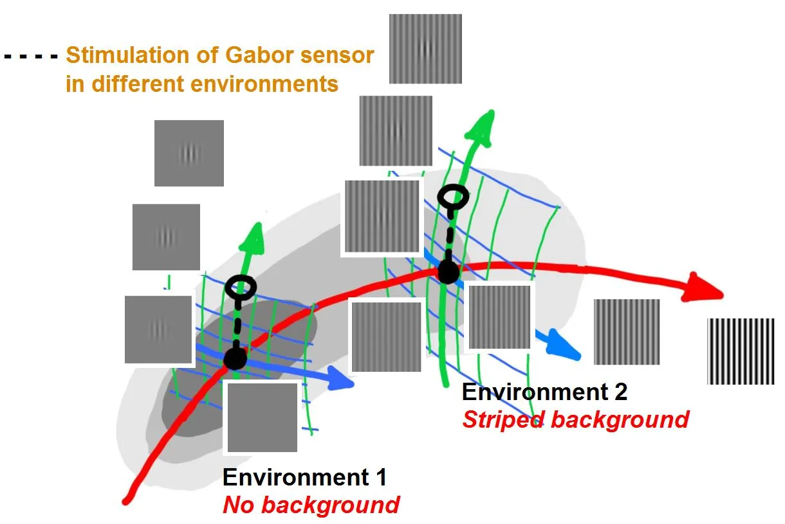
ADAPTATION OF TEXTURE SENSORS II: Equalization
of the image manifold implies different deformations in different
points of the space. This implies that responses to the same Euclidean
departures in different environments lead to different lengths along
the principal curves (the responses of SPCA sensors). (a) equivalent
stimulations in different backgrounds in the input domain, (b) SPCA
transform. (c) Associated responses (length along the green principal
curve in each case). This leads to a reduction
in response/visibility in environment 2 with regard to environment
1. Figure 12 in the Paper shows that transform from (a) to (b) is the actual behavior of SPCA on texture samples.
ADAPTATION OF COLOR SENSORS I: Different
spectral illumination implies a general change of orientation of the
data manifold. This change is not always linear [Laparra12]. Similar
changes in the manifold arise when reflectance of the environment is
biased in some way (e.g. mainly yellowish/reddish objects). In the
example below the blue and orange regions represent the color data
manifolds in D65 and A illuminations which basically differ in a
rotation around the origin towards the yellow end of the Blue-Yellow
(BY) direction (shift along the blue curve). What is the perceived hue
of
a fixed sample (e.g. the sample represented by the open circle) in
these different environments?
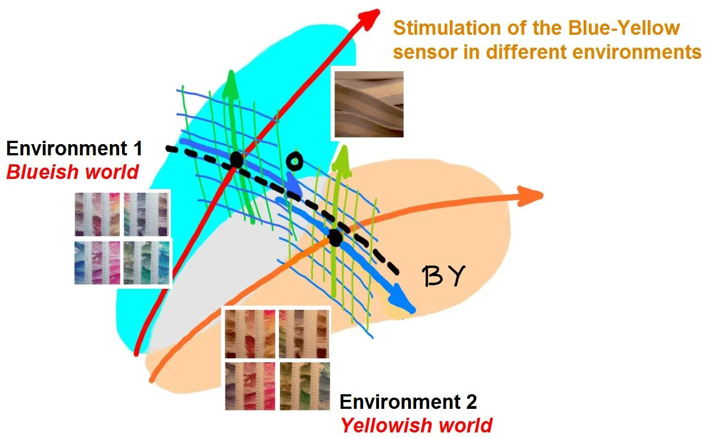
ADAPTATION OF COLOR SENSORS II: Equalization
of the color
manifold implies (i) different deformations in different points of the
space, and (ii) shifts of what is considered to be the origin of the
space. This implies (i) nonlinear responses, and (ii) the response to
certain stimulus is interpreted in different way. For instance
responses of an opponent mechanism may change from positive to negative
hence totally changing the judgement of hue. (a) color data in the
input (tristimulus)
domain. (b) and (c) SPCA transformed data equalizing the environment 1
or environment 2 manifolds. Note that the highlighted sample (open
circle) falls on opposite regions of the space. (d) canonical
representation. (e) Associated response in the considered
environments.
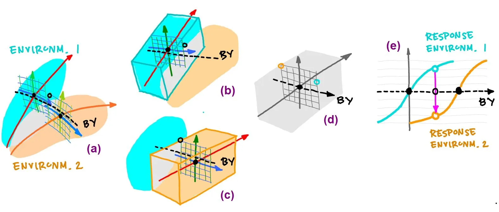
Here we
applied SPCA
to samples from natural videos (3D luminance patches) texture samples
(2D luminance patches) and color samples (tristimulus vectors) after
they went through the first linear stage of the models of motion,
texture, and color sensors (see [Simoncelli
98] for motion, [Watson 97] for texture, and [Abrams 07, Fairchild 05]
for color). Natural movies come from undistorted videos of the standard
databases VQEG and LIVE. Natural textures come from the luminance
calibrated McGill image database, and natural colors come from the
color calibrated IPL image database used in previous spatio-chromatic
adaptation papers [Laparra et al. 12, Gutmann et al. 14].
In order to see how motion and texture aftereffects come from signal
statistics we computed the response of
SPCA sensors tuned to specific spatio-temporal frequency patterns in
different environments, i.e. when similar or different sensors have
different degrees of activation because additional adapting patterns
are present in the scene (biased contrast). In the color
case, we computed the response of SPCA sensors with red-green and
yellow-blue sensitivities in environments of different chromatic nature
(balanced versus biased reflectance set).
In all three cases, different operation regimes were found as a
function of the environment (see the different line-styles
in the figure below): therefore the reference axes of the perceptual
repreentatipon shift!. After-effects arise
when stimuli having certain response in the regular regime, have very
different (shifted) response in the adapted regime.
Predictions
of
nonlinear responses leading to the MOTION AFTEREFFECT
Responses
of
SPCA
sensors tuned to ft = 0 (static pattern) in environments where
other moving patterns are present. Top
panel
(1st
and 2nd rows): responses with adaptation to vertical
speeds. First row displays the response of SPCA tuned for infomax while
second row shows the equivalent results for SPCA sensors with minimum
representation error. In every row, the vertical speed of the adapting
stimulus increases from left to right. Different line styles correspond
to the responses in different environments: the solid black line
correspond to responses to isolated static stimuli, and the other line
styles correspond to responses of the same sensor in environments where
there is also a moving pattern of progressively bigger contrast: from
the dashed-black line (moving mask with small contrast), to the
dashed-red line (moving mask with bigger contrast). The curves are the
average over equivalent stimulation (phase and speed sign). Error bars
indicate standard deviation. Bottom
panel (3rd and 4th rows): equivalent responses with
adaptation
to horizontal speeds.
This kind of high attenuation for close frequencies and weak impact of
distant frequencies (that comes from the statistics!) is compatible
with the reported nonlinearities of motion sensors [Morgan06] and
explains the
question raised by the motion
aftereffect.
Predictions
of
nonlinear responses leading to the TEXTURE AFTEREFFECT
Different
contexts
(adaptation to different high contrast patterns) lead to different
operation regimes of
the same texture sensor which are compatible with the frequency and
orientation properties of post-adaptation masking.
Figures show the
response of a sensor tuned to a particular frequency
as a function of the contrast of stimuli of that frequency. Each plot
represents the adaptation to a different environment (with similar or
different
frequencies). Solid black
lines correspond to the responses of the considered sensor when the
other sensors are not stimulated (in zero contrast adaptation
conditions). Progressively lighter lines represent the responses in the
regime induced by the adaptation to progresively higher contrast of
the adapting stimuli.
When adapting to the stimuli described above (high contrast in the
center and zero contrast in the surround), the sensors in the center
work according to the red lines while the ones in the periphery work
according to the black-solid line. Therefore, when looking at the
uniform image the central part of the image seems to disappear (in the
first case when frequencies are similar), because the response, or
visibility, is strongly reduced, which explains the
question in the
texture effect.
Predictions
of
nonlinear responses leading to the COLOR AFTEREFFECT
A specific
context
(e.g. adaptation to an environment withrestricted
hue) leads
to shifts in the chromatic responses (from gray to colored curves in
the
red-green -left- and yellow-blue -center- channels) that explain theshift
in
perceived
hue
of
post-adaptation
outliers.
See
for
instance
how
achromatic stimuli
(zero
crossings in the gray curves) tend to cyanish hue after adaptation (red
arrows). In both
channels the achromatic stimuli lead to negative values, i.e. green and
blue: cyan.
Note
also that the locus of stimuli corresponding to a balanced range of huesand
chromas
is
shifted
to
the
red
(chromatic
diagram
at
the
right).
As
a
result,
a
stimulus
otherwise
perceived
as
white
(the
one
highlighted
in
red)
is
in the region of the stimuli that correspond to green-blue, which
explains the
question raised by the color
aftereffect.
NOTE 1: The corresponding colors result (transformation of Luo's
corresponding colors from CIE A to the artificial world we crated with
a subset of reflectances) is not in the paper but it is an equivalent
evidence of the SPCA explanation.
NOTE 2: These infomax results (which also reproduce the aftereffect)
are not shown in the paper since in the color case it is obvious that
the infomax solutions give rise to way too sharp nonlinearities (see
[Laparra et al. 12]).
The
general
trend of
the responses and the change of operation
regime come from the way samples
are distributed. In the case of motion and texture, the general
behavior comes
from (1) the increased concentration of samples around zero contrast,
and (2) the faster decay in the density in some directions in
the neighborhood of similar stimuli. In the case of color, the general
behavior comes from (1) peak density at achromatic reflectance, and (2)
deformation of the tristimulus manifold when considering clustered hues
or specific illumination. The specific
organization principle implies different saturation nonlinearity in the
responses. Both criteria lead to shifts and changes of operation regime
that are
compatible with the observed aftereffect in all modalities (motion,
texture and color). In the case of color, where the theoretical
responses were closely compared to the actual responses in [Laparra
12], infomax can be
neglected because of the unrealistic sharpness of the response.
It is important to note that these trends were not imposed by using
some specific functional form in the response, but emerges from the way
data distribution changes in different environments and by optimal
encoding strategies of the data.
We
can conclude that what
appears to be a dysfunctional behavior
actually comes from clever information processing: the system uses the
optimal
operation regime in each environment. Your visual brain is not fooling
you, but trying to do its best in a dynamic environment!.
Paper on illusions and the companion technical report on SPCA:
V. Laparra, and J. Malo, "Visual Aftereffects and Sensory Nonlinearities from a Single Statistical Framework" Frontiers in Human Neuroscience. Special Issue on Perceptual Illusions 2015
V. Laparra, and J. Malo, "The full report on Sequential Principal Curves Analysis" IPL-Technical Report. Universitat de València 2015
Related neuroscience papers:
J. Malo and J. GutiérrezV1 non-linear properties emerge from local-to-global non-linear ICA. Network: Comp. Neural Systems. 17(1): 85-102 (2006)
V. Laparra, S. Jimenez, G. Camps, and J. Malo. Nonlinearities and Adaptation of Color Vision from Sequential Principal Curves Analysis, Neural Computation, vol. 24, no. 10, pp. 2751–2788, 2012.
Papers on related statistical techniques:
V. Laparra, S. Jimenez, D. Tuia, G. Camps-Valls and J. Malo Principal Polynomial Analysis (PPA). International Journal of Neural Systems, 24(7) Nov. 2014.
V. Laparra, J. Malo and G. Camps-Valls. Dimensionality Reduction via Regression in Hyperspectral Imagery.IEEE Journal on Selected Topics of Signal Processing. Vol. 9, Num. 9. September 2015.
Other relevant references:
Abrams, A., Hillis, J., and Brainard, D. "The relation between color discrimination and color constancy: When is optimal adaptation task dependent?" Neural Computation, 19(10):2610–2637. 2007
Barlow, H. "Possible principles underlying the transformation of sensory messages". Sensory Communication, pp. 217-234, 1961.
Barlow, H. “A theory about the functional role and synaptic mechanism of visual aftereffects,” in Vision: Coding and Efficiency, C. Blakemore, Ed. Cambridge, UK: Cambridge Univ. Press, 1990.
Barlow, H. "Redundancy reduction revisited". Network: Computation in Neural Systems, 2001.
Blakemore, C. and Campbell, F.W. "On the existence of neurons in the human visual system selectivity sensitive to the orientation and size of retinal images". J. Physiol. 203: 237-60, 1969
Carandini, M. and Heeger, D., “Normalization as a canonical neural computation.” Nature Reviews. Neurosci., vol. 13, no. 1, pp. 51–62, 2012.
Clifford, C., Webster, M., Stanley, G., Stocker, A., Kohn, A., Sharpee, T., and Schwartz, O. “Visual adaptation: Neural, psychological and computational aspects,” Vision Research, vol. 47, pp. 3125–3131, 2007.
Clifford, C., Wenderoth, P., and Spehar, B. (2000), A functional angle on some after-effects in cortical vision, Proc. Roy. Soc. B, 267, 1705–1710
Coen-Cagli, R., Dayan, P., and Schwartz, O. (2010), Statistical models of linear and nonlinear contextual interactions in early visual processing, in Adv. Neur. Inf. Proc. Syst. NIPS 09'. vol. 22, 369–377
Fairchild, M. Color Appearance Models, 2nd Ed. Chichester, UK: Wiley-IS&T, 2005.
Krauskopf, J. and Gegenfurtner, K. (1992), Color discrimination and adaption, Vision Res., 32, 11, 2165–2175
Mather, G, Pavan, A, Campana, G, Casco, C. The motion after-effect reloaded. Trends Cog. Sci. 12(12): 481-487. 2008
Morgan, M., Chubb, C., and Solomon, J. (2006), Predicting the motion after-effect from sensitivity loss, Vision Research, 46, 2412–2420
Simoncelli, E. and Heeger, D. (1998), A model of neuronal responses in visual area MT, Vision Research, 38, 5, 743–761
Stocker, A. A. and Simoncelli, E. P. (2006), Sensory adaptation within a Bayesian framework for perception, Adv. Neur. Inf. Proc. Syst. (NIPS 05'), vol. 18, 1291–1298
Stocker, A. and Simoncelli, E. (2009), Visual motion aftereffects arise from a cascade of two isomorphic adaptation algorithms, Journal of Vision, 9
Watson, A.B. and Solomon, J. “A model of visual contrast gain control and pattern masking,” JOSA A, vol. 14, pp. 2379–2391, 1997.
Weiss, Y., Simoncelli, E. P., and Adelson, E. H. (2002), Motion illusions as optimal percepts, Nature Neuroscience, 3, 598–604
Data:
natural
movies, natural
visual
textures,
and natural
colors
These
are the
original sources of the natural scene data used to train the algorithm.
Natural
Movies
Patches of natural movies were necessary as training set to optimize
the response of motion sensors to derive the motion aftereffect .
We used the achromatic channel of undistorted -raw- videos from
standard databases on subjective video quality):
Natural
Images
Patches of natural images were used as training set to (1) optimize the
response of texture sensors to derive the texture aftereffect, (2)
design image representations for nonlinear ICA or optimal transform
coding, and (3) check the convergence of SPCA transform in texture data
-technicality not shown in the paper-. We used the luminance channel of
the colorimetrically calibrated McGill database:
Natural Colors Natural
colors
were
necessary
as
training
set
to
(1)
optimize
the
response of color sensors to derive the color aftereffect, and (2)
check the
convergence of SPCA transform in color data -technicality not shown in
the paper-. We
used
tristimulus
vectors
gathered
from
colorimetrically
calibrated
images
of
the
Image Processing Lab (IPL) database:
IPL image database with
colorimetrically calibrated images and diverse controlled
illuminantions: ./data_color.htm
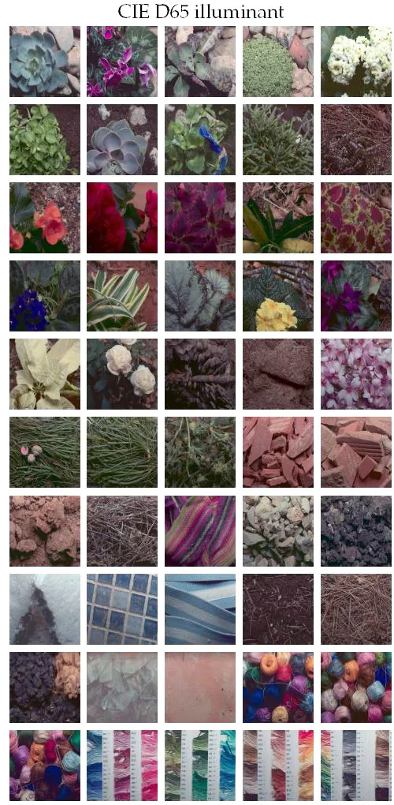
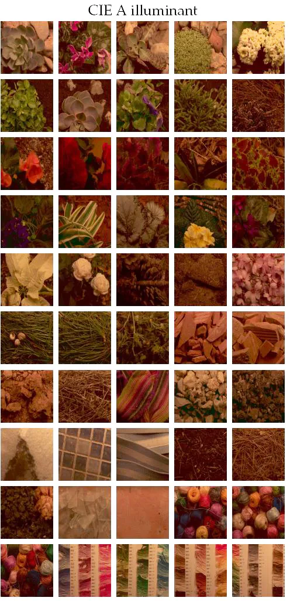
The
code
to
reproduce
the
results
in
the
paper
either
requires preprocesed
data subsets from the above sources (when preprocessing is
straighforward), or includes routines to read the raw data and
rearrange it as required in each experiment. You may
download all the required data in a single data file:
This is the
code to
reproduce all the results in the paper "Visual Aftereffects from biased
Scene
Statistics". Before running a specific experiment, make
sure you
downloaded the required data and the general purpose toolbox (if
required). You can try the all-in-one
version (yellow box).